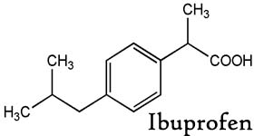
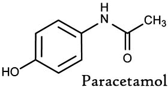

Indications:- Cold, Flu, Sore Throat, Headaches.

Ibuprofen + paracetamol suspension
SUSPENSION PRESENTATION:
Each 5 ml contains:
Ibuprofen IP 100 mg
paracetamol IP 162.5 mg

Ibuprofen plus Paracetamol (Acetaminophen) Suspension:
Ibuprofen: Ibuprofen is recommended for treatment of juvenile arthritis and is well tolerated. It is also an effective antipyretic. Treating minor aches and pains caused by the common cold, flu, sore throat, headaches, or toothaches. It may be used to reduce fever.
Paracetamol: Is a safe and effective analgesic-antipyretic agent with minimal effect on cardiovascular, respiratory and GI system. Paracetamol is a widely used as analgesic and antipyretic. Paracetamol is the analgesic of choice for mild to moderate pain and to reduce fever. It is suited for both adults and children and, as it does not cause stomach irritation.
It has been demonstrated by recent studies of Health Technology Assessment that administration of combination (Ibuprofen +paracetamol) possesses remarkable anti-inflammatory, Analgesic and antipyretic properties.
 

The combination of non-steroidal anti-inflammatory drugs like (Ibuprofen, paracetamol) is used for:
- Treatment of pyrexia in children over one year of age.
- Dental Pain ,post-operative pain
- Soft tissues injuries like sprains, strains.
- Fever and the relief of mild to moderate pain.
Main features: Analgesic, Anti-inflammatory and Anti-pyretic action.

Ibuprofen :
- Absorption: Ibuprofen is absorbed from gastrointestinal tract and peak plasma concentration occurs about 1-2 hours after ingestion.
- Metabolism:Ibuprofen: is metabolized to two metabolites.
- Excretion: Ibuprofen: these are excreted in urine.1% is excreted in urine as unchanged ibuprofen about 14% as conjugated ibuprofen. Ibuprofen is bound to plasma proteins.
- Absorption: It is absorbed from gastrointestinal tract.
- Distribution: It is widely distributed throughout most body fluids.
- Excretion: 90-100% is recovered in urine within 24 hours, extremely following hepatic conjugation with glucuronic acid, sulphuric acid or cysteine.

BEFORE TAKING THIS FORMULATION TELL THE DOCTOR ABOUT ANY MEDICAL PROBLEMS AND ALLERGIES THAT A CHILD HAS OR HAD."
Drugs that can lead to drug interactions are: Warfarin, cardiacglycosides, Digoxin, Cholestyramine, Corticosteroids, Ciclosporin, Methotrexate, Diureticsiazid, Metoclopramide, Domperidone Baclofen, Probenecid, Quionolone antibiotics, Tacrolimus, Zidovudine.

The most commonly reported adverse effects are:
- Feeling or being sick
- Nausea
- Skin rashes
- Headache
- Dizziness

Impaired hepatic and renal function, peptic ulceration or a history of such ulceration. Cardiovascular disease.
Hypersensitivity to any of the active ingredients, aspirin or other non-steroidal anti-inflammatory medicines.
Increased risk of toxicity with high doses or long term administration of carbamazepine, hydantoins, isoniazid, rifampin and sulfinpyrazone.
In patients showing hypersensitivity reactions like asthma, angioedema or utricaria.

Store in a well closed container in cool, dry place, away from direct heat and light.

"This medication is not applicable since they are intended for use in children."
"Dosage should not exceed that recommended for each individual agent"
"However, this information is relevant to the active Ingredients, Ibuprofen and paracetamol."
"Caution when driving or operating machinery."
"Response to medication may vary from one individual to another, contain side effects like (vertigo, dizzies nervousness, insomnia) that have been reported very rarely with the medicine may affect some patient's ability to drive, operate machinery."

In conclusion, ibuprofen suspension was as effective and well tolerated as paracetamol in treatment of fever in young children. This suspension has been shown to be safe . it is clear from this study that this combination is used both as analgesic and antipyretic. Moreover, it has a considerable safety profile, with persistent results.